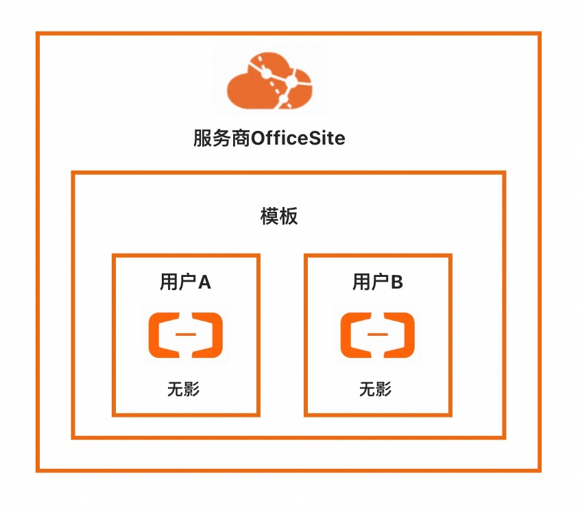

服务模板说明文档
服务说明
本文介绍快速构建无影托管版单租户计算巢服务，关于计算巢托管版可以参考帮助文档，
本示例对应的Git仓库地址：wuying-managed-demo。
本示例会自动的构建计算巢服务， 创建过程大约持续3分钟，当服务变成待提交后构建成功。
部署架构
本服务仅部署一台无影云桌面，具体架构如下。 
服务构建计费说明
测试本服务构建无需任何费用，创建服务实例涉及的费用参考服务实例计费说明。
RAM账号所需权限
本服务需要对无影云桌面资源进行访问和创建操作，若您使用RAM用户创建服务实例，需要在创建服务实例前，对使用的RAM用户的账号添加相应资源的权限。添加RAM权限的详细操作，请参见为RAM用户授权 。所需权限如下表所示。
| 权限策略名称 | 备注 |
|---|---|
| AliyunECDFullAccess | 管理无影云电脑和无影云应用的权限 |
| AliyunROSFullAccess | 管理资源编排服务（ROS）的权限 |
| AliyunComputeNestUserFullAccess | 管理计算巢服务（ComputeNest）的用户侧权限 |
| AliyunComputeNestSupplierFullAccess | 管理计算巢服务（ComputeNest）的服务商侧权限 |
服务实例计费说明
测试本服务在计算巢上的费用主要涉及：
- 无影云桌面费用
计费方式包括：
- 按量付费（小时）
部署流程
部署参数说明
| 参数组 | 参数项 | 示例 | 说明 |
|---|---|---|---|
| 服务实例名称 | test | 实例的名称 | |
| 资源组和地域 | 资源组 | 默认资源组 | 创建的服务实例位于的资源组。 |
| 资源组和地域 | 地域 | 华东1（杭州） | 选中服务实例的地域，建议就近选中，以获取更好的网络延时。 |
| 用户信息 | 用户名 | user | 不超过 64 个字符，必须以大小字母或中文开头，不能以http://和https://开头，可以包含中文、英文、数字、半角冒号（:）、下划线（_）、点号（.）或者短划线（-）。 |
| 用户信息 | 手机号 | 153** | 请输入11位手机号码，用户密码将会在无影创建完成后发送短信至手机。 |
部署步骤
说明：本服务需要用户输入用户名与手机号。若用户名与手机号不存在，将创建无影用户；否则将引用已有用户信息。
- 进入服务，单击部署链接。

- 进入服务实例部署界面，根据界面提示，填写参数完成部署。

- 参数填写完成后可以看到对应参数，确认参数后点击立即创建，进入部署阶段。

- 用户侧可以看到服务实例处于待部署状态。

- 服务商可以点击部署，开始进入部署阶段。


- 等待部署完成后就可以开始使用服务，进入服务实例，点击无影登陆地址。


 输入办公网络ID，进入账号密码输入页，账号密码会通过短信发送到创建服务实例时输入的手机号中。输入密码后，即可进入云桌面。
输入办公网络ID，进入账号密码输入页，账号密码会通过短信发送到创建服务实例时输入的手机号中。输入密码后，即可进入云桌面。


服务详细说明
文件说明：
| 文件路径 | 说明 |
|---|---|
| config.yaml | 构建服务的配置文件，服务构建过程中会使用计算巢命令行工具computenest-cli，computenest-cli会基于该配置文件构建服务。 |
| parameters.yaml | 本服务为托管版单租，使用该文件渲染服务商需要配置的云桌面参数，包括办公网络ID、模板ID、策略ID。 |
| icons/service_logo.png | 构建服务默认的图标。 |
| templates/parameters.yaml | 本服务为托管版单租服务，所以只需要用户填写一部分参数，通过该文件指定用户所填参数。 |
| templates/template.yaml | ROS模板文件，ROS模板引擎根据该模板能够自动创建出所有的资源。 |
© 2009-2022 Aliyun.com 版权所有